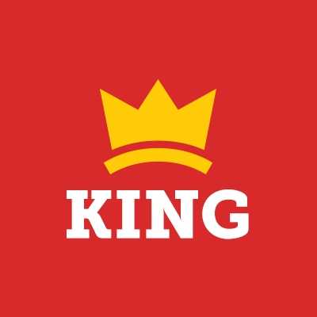

主页
H R
工作指示板
发布工作
我的工作列表
收到的简历
公司简历
修改个人信息
修改密码
 Donec Software
New York, London
Donec Software
收到的简历
发布招聘
我的工作清单
更新我的资料
修改密码
注销
2
Inbox
John Stone applying this job contact
Nguta Ithya applying this job contact
Salome Simoes applying this job
简历管理
收到的简历
投递职位
Java工程师
前段工程师
工作经验
工作经验不限
无经验
应届生
1年-3年
3年以上
性别
性别不限
男
女
年龄
年龄不限
16-20岁
21-30岁
31-40岁
41-50岁
51岁以上
学历
学历不限
高中/中专/技校
大专
本科
硕士
博士
简历分组
分组不限
收藏夹
回收站
未分组
查找关键字
Tags
PHP
MySQL
API
react
design
Job Dashboard
Organize and Manage
Post Job
My job listings
Account
Update My Profile
Change Password
Logout
Findy Sorest
Java工程师
地址
北京
工作经验
5 Years
年龄
26
简历详情
收藏
回收站
Dedolp Seofls
Java工程师
地址
北京
工作经验
5 Years
年龄
26
简历详情
收藏
回收站
Dedolp Seofls
Java工程师
地址
北京
工作经验
5 Years
年龄
26
简历详情
收藏
回收站
Dedolp Seofls
Java工程师
地址
北京
工作经验
5 Years
年龄
26
简历详情
收藏
回收站
Dedolp Seofls
Java工程师
地址
北京
工作经验
5 Years
年龄
26
简历详情
收藏
回收站
Dedolp Seofls
Java工程师
地址
北京
工作经验
5 Years
年龄
26
简历详情
收藏
回收站
has-sub-menu